Halcyon future builder concepts
Twelve imagined screenshots. Future design references, not current application captures.
Tidal — editorial desktop
Full image
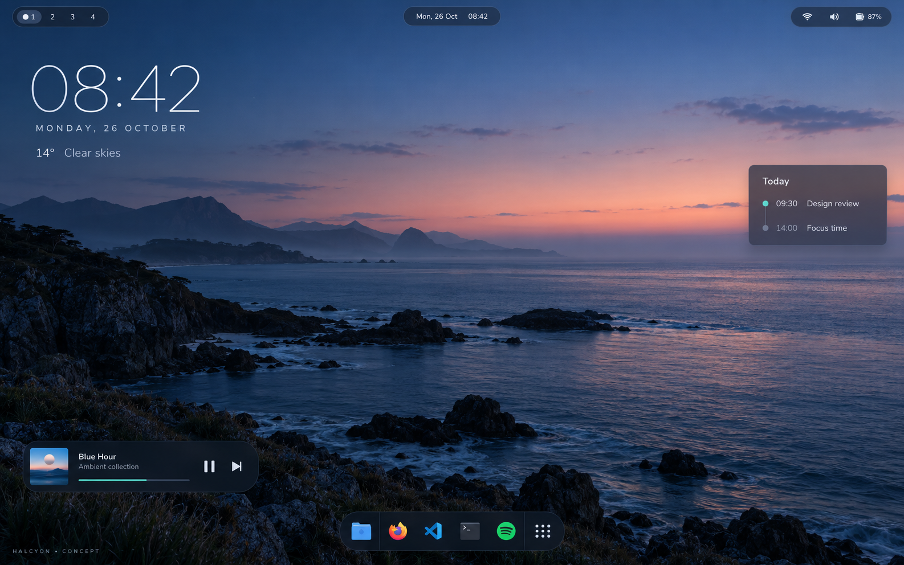
Moss — soft material desktop
Full image
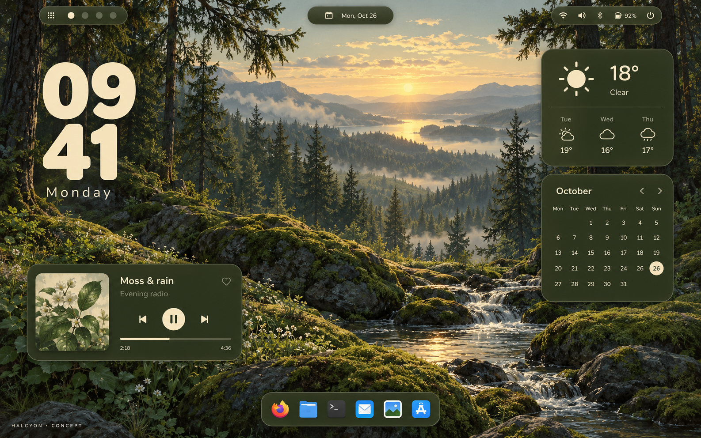
Paper — warm light desktop
Full image
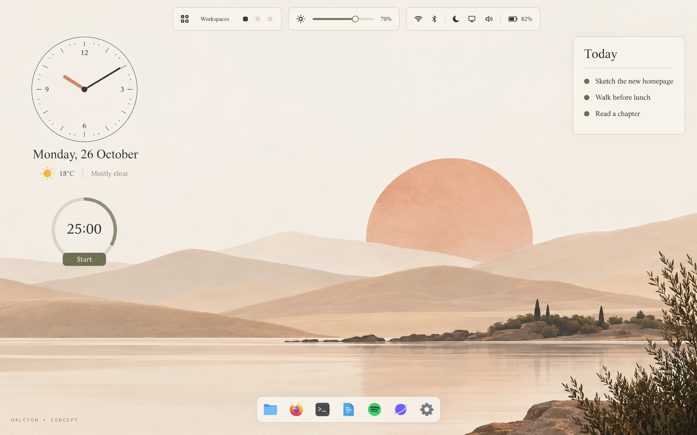
Carbon — compact technical desktop
Full image
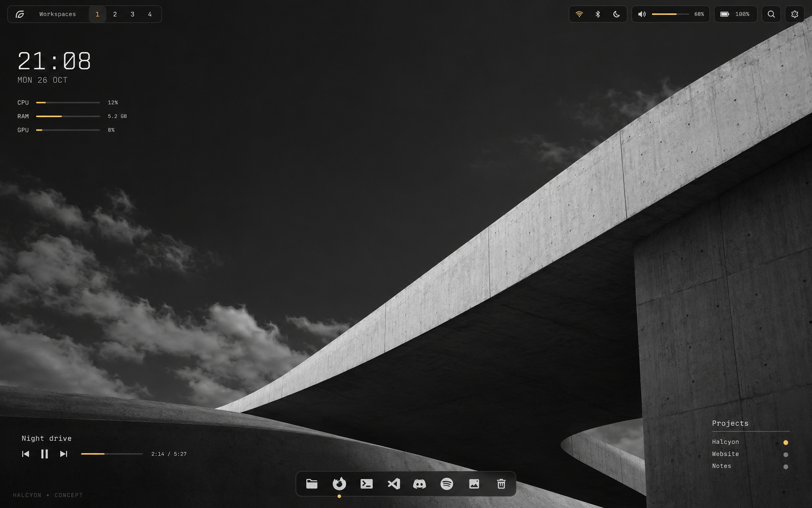
Desktop canvas — direct visual editing
Full image
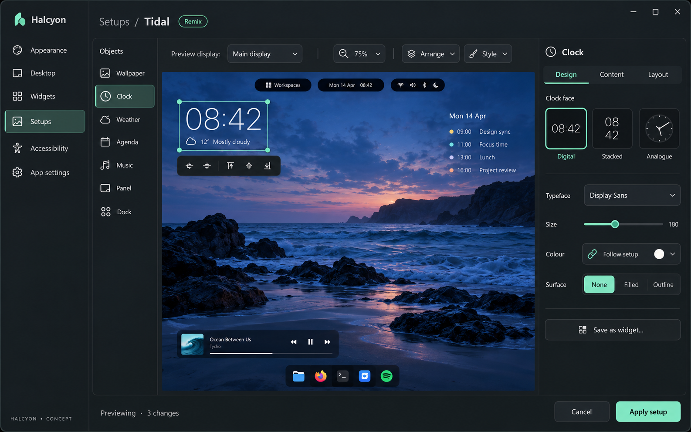
Widget builder — personal components
Full image
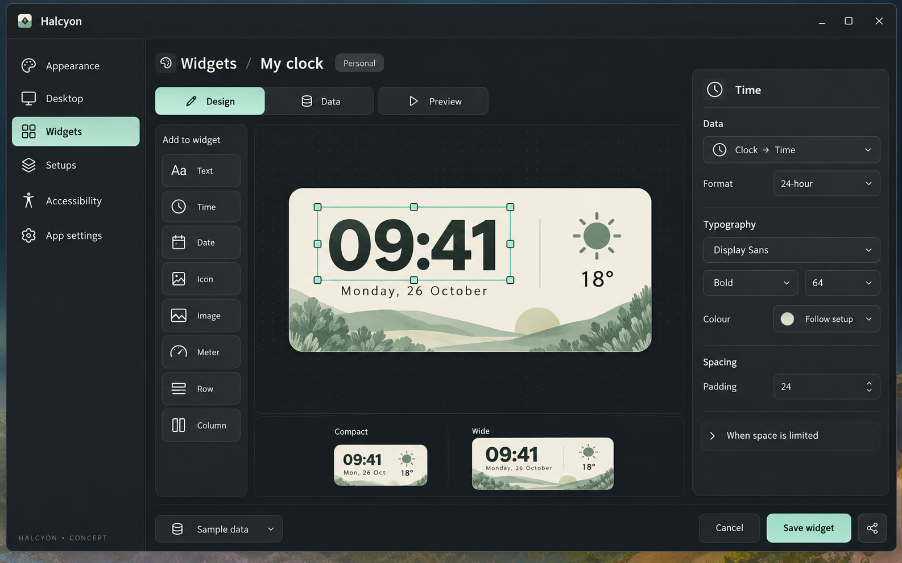
Community setups — discover, preview, remix
Full image
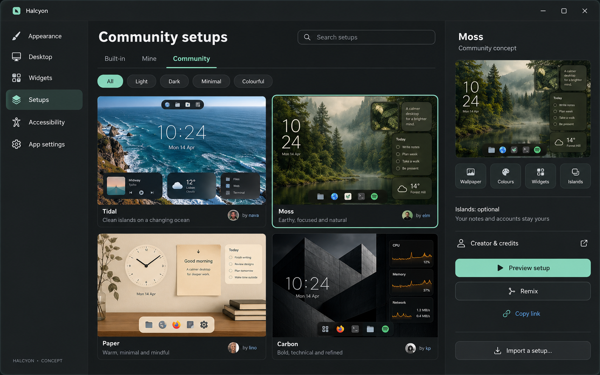
Ridge — the clock becomes part of the picture
Full image
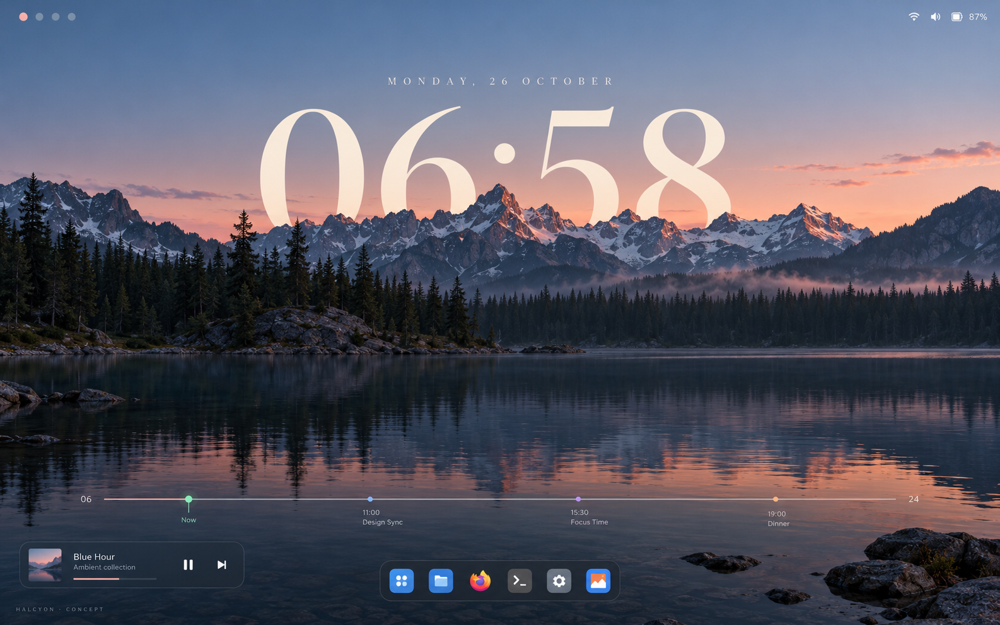
Spine — a vertical desktop
Full image
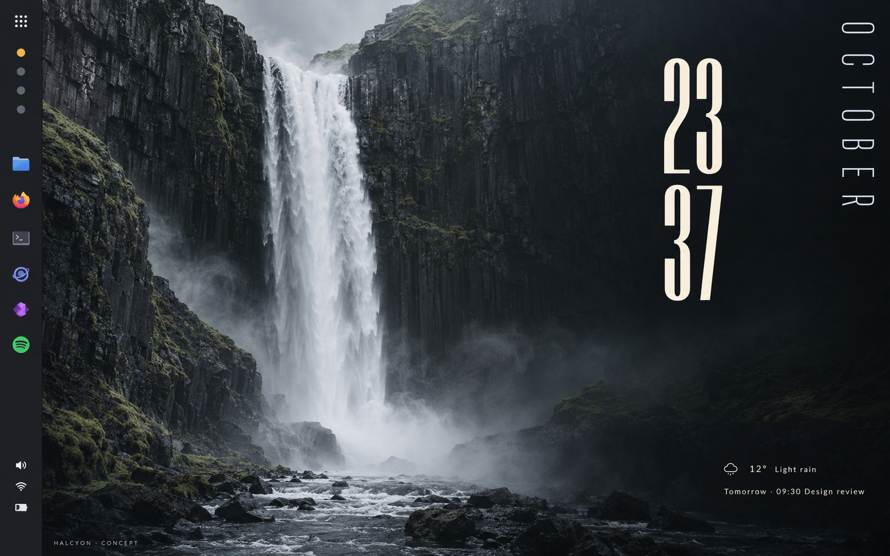
Moments — one setup through the day
Full image
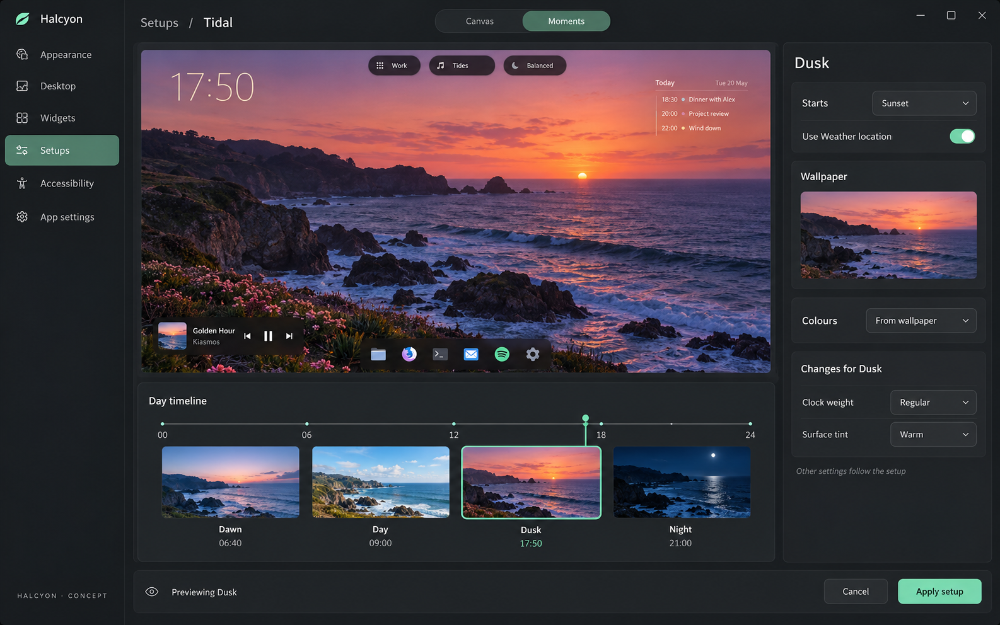
Mix board — combine the parts you like
Full image
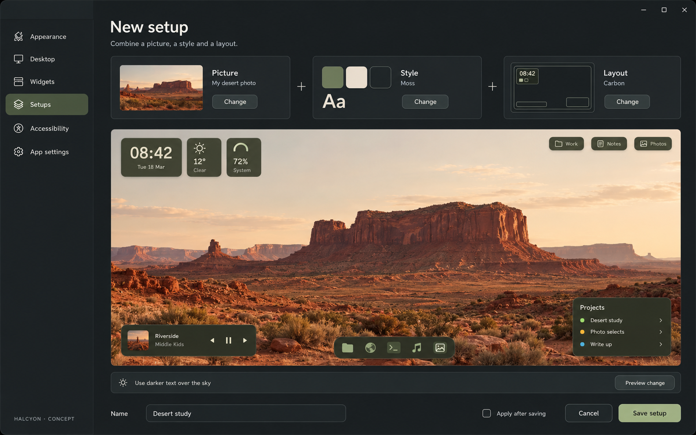
Type wall — choose by looking
Full image
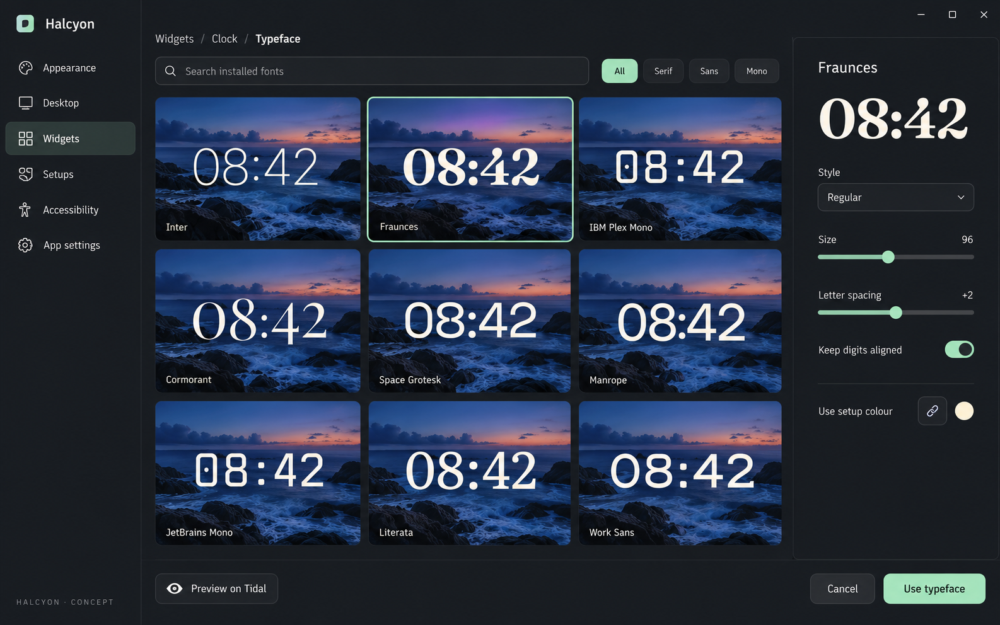